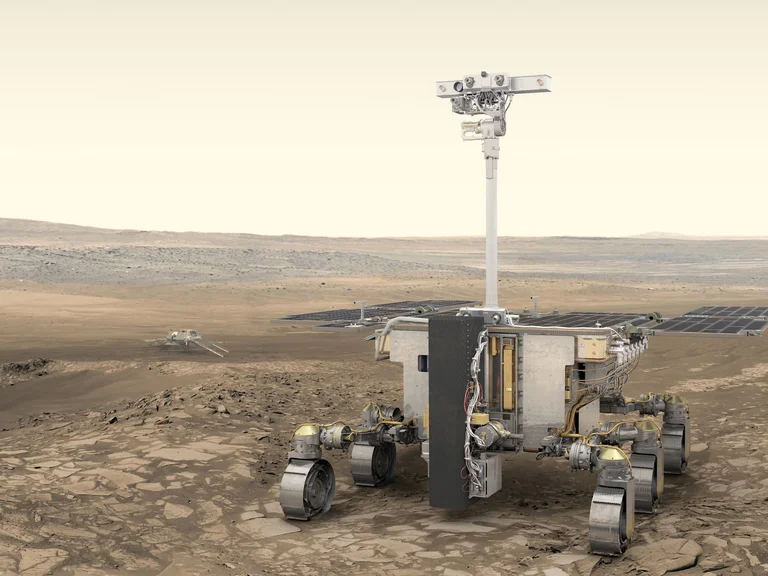

Luna, Marte y nuevas estaciones: los planes espaciales para 2022
Los viajes al espacio están en auge, al tiempo que se planifican nuevas estaciones espaciales y continúa la carrera hacia la Luna y Marte. La lista de las misiones que se planifican en el mundo es larga y el número de países y proveedores comerciales que participan crece cada día más.